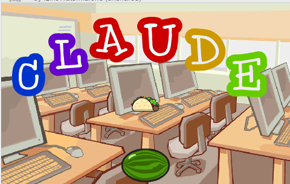
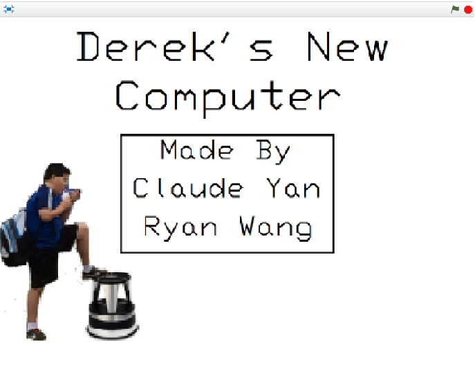
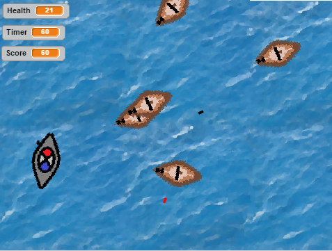

Scratch Content

Name Project
The purpose of this activity was to create a program that would display my name on it. My name had to have 3 unique animations and every letter had to have at least 1 of those 3 effects. The name was supposed to start animating when the green flag was clicked, and extra credit was offered if you made the animations reset when the green flag was clicked. I made my entire name flash random colors and made some letters rotate in certain directions after a certain amount of time.
Concepts Learned
- Using event blocks: When space pressed, when green flag clicked, etc.
- Loops: Forever statement, repeat forever, etc.
- Sprites: Used Scratch's sprites for the letters in my name
Computer Buying Project
My partner Ryan Wang and I made a short animation where our friend Derek Wen goes and buys a new computer. He gets offered a few gaming computers that each have their own unique properties. We made him pick a computer that we thought he would have gotten in real life. The purpose of this activity was to learn a little bit more about a computer's individual parts
Concepts Learned
- Animation: Although I only made the building blocks of whatever we needed to complete the project (sprites, sounds, etc.), I learned a lot about switching scenes by watching Ryan animate on a daily basis
Scratch Final Project:
My final project for Scratch was a game where you're captaining a warship, and you're trying to kill multiple enemy ships, and eventually the boss. I made it so that the boss spawns when you kill a certain ship, but you don't know which one. As long as you kill the boss, you win, regardless of how many more mini ships there are.
Concepts Learned
- If statements: I used if statements to determine if you lost the game (hp = 0) or if you won (bossHP = 0)
- Random: I made it so that the main character moves with WASD keys, and the enemy ships would constantly be moving around the map towards random coordinates.